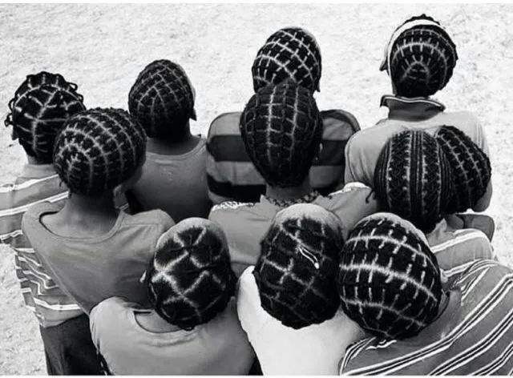
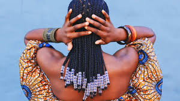

En La Tr3nza, nos apasiona ofrecer los mejores servicios de peluquería y cuidado del cabello. Desde nuestros inicios, nos hemos comprometido a brindar un servicio de calidad, adaptado a las necesidades únicas de cada cliente y tambien brindamos un poco de la historia de las trenzas y sus origenes para tener conciencia de lo que llevamos.
Con años de experiencia en el sector, nos enorgullecemos de nuestro trabajo y nos esforzamos por superar las expectativas en cada visita.
Las trenzas africanas llegaron a América a través de las mujeres negras esclavizadas, aunque durante el periodo de la esclavitud estas fueron prohibidas en la mayoría de los casos, como cualquier otro tipo de expresión estética que remitiese al continente africano, como danzas, religión, capoeira y creencias.
Existen relatos históricos de que en América Latina, durante el periodo de la esclavitud, estas fueron usadas como medio de comunicación entre los negros. Las mujeres negras tenían la costumbre de trenzar sus cabellos y hacían los mapas en la cabeza unas de las otras, dibujando con las trenzas para encontrar el camino en las fugas para los quilombos. La simbología de la resistencia también es muy fuerte en las trenzas.
Pasado este periodo sabemos que después de la abolición de la esclavitud, a pesar de los negros ser “libres”, permanecieron amarrados a un sistema deshumano de discriminación racial y su herencia cultural continuó siendo negada, dando lugar a una cultura eurocéntrica.
A pesar de todo esto, el cabello de las mujeres negras era un acto de resistencia, en África las trenzas podían simbolizar estatus social, la tribu a la que pertenecías, sí la mujer era casada o no, dependiendo de los elementos decorativos usados simbolizaba poder adquisitivo; entonces podemos pensar que fue una de las pocas herencias culturales que podían ser demostradas “libremente” en aquella época.